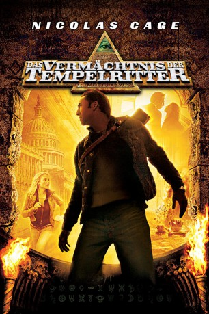

gesehen am 16.05.2015
gesehen am 16.05.2015Alternativ: National Treasure gesehen am 16.05.2015
 
 IMDB-Wertung: 6.9 / 10
IMDB-Wertung: 6.9 / 10  Metascore:
Metascore: 
Benjamin Franklin Gates ist der jüngste Spross einer Familie stolzer Schatzjäger, die sich seit acht Generationen einer einzigen Aufgabe verschrieben haben: Sie suchen überall in den Vereinigten Staaten nach einer Schatztruhe mit der Kriegskasse, die die amerikanischen Gründerväter nach dem Revolutionskrieg vergraben haben. Aber Benjamin ist nicht allein! Auch andere Jäger verlorener Schätze haben die Fährte längst aufgenommen. Um das Chaos perfekt zu machen, schaltet sich auch noch das FBI ein. Jetzt muß Benjamin schnell handeln, wenn sein Lebenstraum in Erfüllung gehen soll…
Jahr: 2004
Dauer: 131 Minuten
FSK: 12
Land: USA Studio: Buena Vista PicturesTonspuren:
Untertitel: Deutsch,
Auflösung: 720p (1280x720) Größe: 4177 MB
Genre: Action, Abenteuer, Familie, Mystery, Thriller
Regisseur:  Jon Turteltaub
Jon Turteltaub
Drehbuch: Jim Kouf, Cormac Wibberley, Marianne Wibberley, Jim Kouf, Oren Aviv
Soundtrack: Trevor Rabin
Darsteller:
 Nicolas Cage als Benjamin Franklin Gates
Nicolas Cage als Benjamin Franklin Gates Diane Kruger als Abigail Chase
Diane Kruger als Abigail Chase Justin Bartha als Riley Poole
Justin Bartha als Riley Poole Sean Bean als Ian Howe
Sean Bean als Ian Howe Jon Voight als Patrick Gates
Jon Voight als Patrick Gates Harvey Keitel als Sadusky
Harvey Keitel als Sadusky Christopher Plummer als John Adams Gates
Christopher Plummer als John Adams Gates Oleg Taktarov als Shippen
Oleg Taktarov als Shippen Annie Parisse als Agent Dawes
Annie Parisse als Agent Dawes Mark Pellegrino als Agent Johnson
Mark Pellegrino als Agent Johnson Armando Riesco als Agent Hendricks
Armando Riesco als Agent Hendricks Erik King als Agent Colfax
Erik King als Agent Colfax Don McManus als Dr. Stan Herbert
Don McManus als Dr. Stan Herbert Ron Canada als Guard Woodruff
Ron Canada als Guard Woodruff Sharon Wilkins als Butcher Lady
Sharon Wilkins als Butcher Lady Michael Ahl als Visitor at National Archives , uncredited
Michael Ahl als Visitor at National Archives , uncredited Frank Anello als FBI Agent , uncredited
Frank Anello als FBI Agent , uncredited Michael Arthur als USS Intrepid Sercurity , uncredited
Michael Arthur als USS Intrepid Sercurity , uncredited Ty Copeman als Security , uncredited
Ty Copeman als Security , uncredited Alexander Emmert als Russian , uncredited
Alexander Emmert als Russian , uncredited Basil Kershner als Impatient Tourist , uncredited
Basil Kershner als Impatient Tourist , uncredited Kirk Lambert als FBI Agent , uncredited
Kirk Lambert als FBI Agent , uncredited Tony Luke Jr. als Strip Club Sweeper , uncredited
Tony Luke Jr. als Strip Club Sweeper , uncreditedDatei: X:\2-Dilogie(N-Z)\Vermächtnis\Vermächtnis der Tempelritter, Das (2004, FSK12, 1280x720).mkv seit 25.02.2015
Festplatte: HD Collection-2(A-Z)-3(A-M)
 Alle Filme aus Gruppe '2-Dilogie(N-Z)\Vermächtnis'
Alle Filme aus Gruppe '2-Dilogie(N-Z)\Vermächtnis'